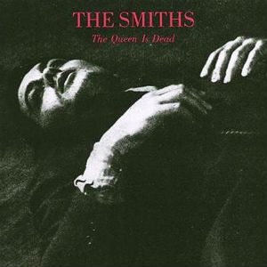
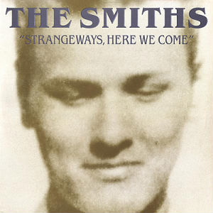
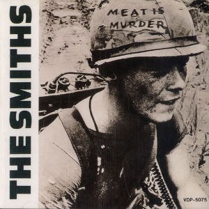

How well do you know
Morrissey?
Which artist does Morrissey cite as a key influence
on his coming of age?
Ian Curtis
John Lennon
David Bowie
Aretha Franklin
When Morrissey sang with an unnamed band at his first public gig, at Manchester University in 1981, what name did the newspapers give the group?
The Nosebleeds
The Heartbreakers
Manchester Boys
Grey Horse
What's the origin of the band name "The Smiths"?
It was the guitarist's last name
It pays homage to the English linguist Albert Hugh Smith
It was a common name with little cultural meaning
It references Morrissey's uncle and father, who were blacksmiths in Ireland.
Which album was the Smiths' first to reach the top of the UK charts?



What's the origin of the band name "The Smiths"?
It was the guitarist's last name
It pays homage to the English linguist Albert Hugh Smith
It was a common name with little cultural meaning
It references Morrissey's uncle and father, who were blacksmiths in Ireland.